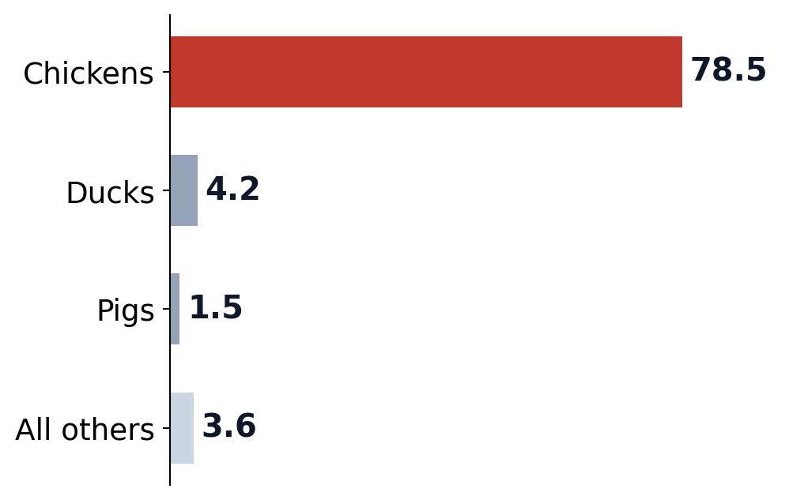
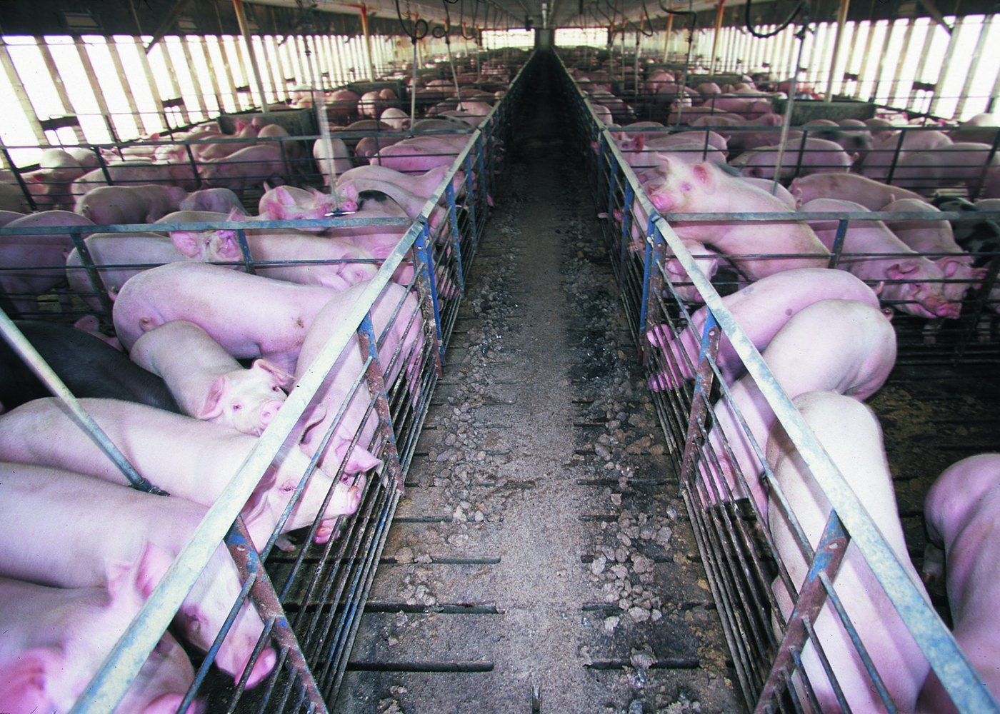
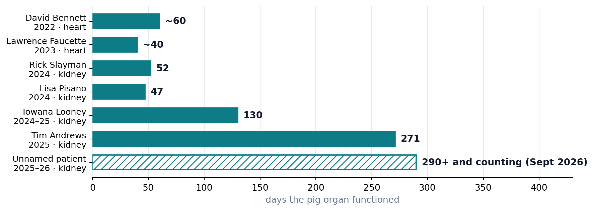
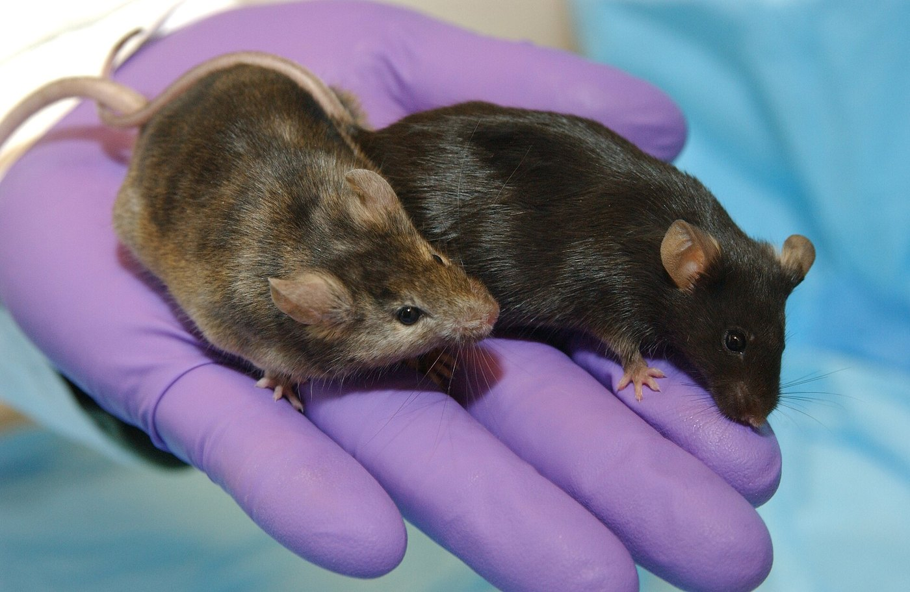

Lecture 12 — Animal Ethics
Part B: Industrial Animals, Xenotransplantation, and the Frontier
1 Rank These Four
1.1 A Case to Sit With
Here are four ways humans use animals. Put them in order, from most defensible to least:
- Bacon from a factory-farmed pig.
- A rabbit used to test a new mascara for eye irritation.
- A gene-edited pig whose heart is transplanted into a dying patient.
- A lab mouse engineered to be smarter, to make a better research subject.
What did you put last, and what rule were you using? Did “high-tech” or “unnatural” push anything down your list? Should it?
1.2 After You’ve Discussed
Note
Most people rank the pig-heart transplant as more troubling than the bacon. Hold that intuition up to the light.
By the end of today we’ll have a tool that ranks animal uses by scale, necessity, and benefit, and on that tool the everyday cheeseburger comes out worse than the high-tech transplant. Whether you accept that result, or reject the tool, is the work of this lecture.
1.3 Today
In Part A we asked which beings have moral status, and met Kant, Korsgaard, Singer, Regan, and Cohen. Today the same views face the two largest and most advanced uses of animals.
By the end of Part B, you will be able to:
- Explain how industrial animal agriculture harms animals and humans, including antibiotic resistance and pandemic risk.
- Describe how pigs are gene-edited for transplant, and what makes xenotransplantation ethically distinct.
- Use the scale–necessity–benefit ledger, explain how Regan resists it, and connect animal ethics to arguments from earlier in the course.
2 The Biggest Use: The Food System
2.1 The Scale Is the Argument
Humans slaughter nearly 88 billion land animals a year for meat: about ten for every person on Earth. Nine in ten are chickens (Our World in Data 2026).
Recall Singer: this is vast suffering for an interest (taste, cost, convenience) that is, for most of us, minor and replaceable. A practice repeated billions of times needs a justification billions of times as strong.
2.2 What That Number Looks Like
Socially Responsible Agricultural Project, via Wikimedia Commons. CC BY 4.0.

Inside a hog barn, Lyons, Georgia. Jeff Vanuga, USDA NRCS. Public domain.
Most live in CAFOs (concentrated animal feeding operations): crowded indoor barns they never leave.
2.3 It Harms Humans Too: Antibiotics
- About two-thirds of medically important antibiotics sold in the U.S. go to food animals (Patel et al. 2020), and sales rose 16% in 2024 (FDA 2025).
- Routine use breeds antibiotic resistance: bacteria that survive the drugs reach people through food, water, and farm workers.
- Resistant infections already contribute to about 4.7 million deaths a year; one forecast projects 8.2 million by 2050 (GBD AMR Collaborators 2024).

2.4 It Harms Humans Too: Pandemics
- Crowding genetically similar animals together is ideal for breeding new viruses. Avian and swine influenza strains have jumped from farms to people.
- Many experts count industrial animal agriculture and the wildlife trade among the century’s leading pandemic risks.
Note
A rare convergence. Kant and Cohen grant animals no rights, yet their human-centered view still condemns a system that breeds resistant bacteria and pandemic flu. Welfare reasons and self-interested reasons point the same way.
2.5 Thought Question
Your hospital sources its cafeteria meat from conventional industrial farms. A nurses’ group proposes switching to higher-welfare, antibiotic-free suppliers, at higher cost, paid from the same budget that funds patient programs.
- Have you ever paid more, or gone without, for something you thought was right: cage-free eggs, fair-trade coffee, a boycott? Should an institution make that choice for everyone who eats there?
- Do you vote for the switch? What do you say to the patient whose program might be trimmed to pay for it?
2.6 After You’ve Discussed
Note
A distinction the food case forces: direct vs. indirect harm.
The factory farm harms the pig directly: that is the welfare wrong. It also harms humans indirectly, through resistant bacteria and new viruses: a second wrong with different victims.
The two can come apart. A reform could ease the public-health harm (ban routine antibiotic use) while leaving the welfare harm untouched, and vice versa. Knowing which harm a policy fixes keeps you from claiming credit for both.
3 The High-Tech, Low-Number Use
3.1 Why Xenotransplantation
- More than 100,000 Americans are on the transplant waiting list, most of them (86%) for a kidney, and about 13 die each day waiting.
- Xenotransplantation, transplanting organs from another species, promises an unlimited supply, grown to order.
- The species of choice is the pig: organs the right size, fast breeding, decades of surgical familiarity. The obstacle was always rejection: the human body destroys ordinary pig tissue within minutes.
3.2 How You Build a Transplant Pig
The breakthrough was genetic, not surgical. CRISPR lets researchers edit a pig so its organs survive in a human body.

A transplant pig may carry a dozen or more edits, some removing pig features the body attacks, some adding human ones it accepts.
3.3 The Cases So Far

In 2025 the FDA cleared the first formal trials: an equipoise problem, not just a rescue. And two patients, including Tim Andrews, used a pig kidney as a bridge to a human one (eGenesis 2026).
3.4 What Makes Xeno Ethically Distinct
- Animal welfare: source pigs live their whole lives in sterile isolation, engineered and monitored as living organ factories.
- Risk to the public: a pig virus could cross into the patient and then spread to others, a xenozoonosis. The patient consents; the public can’t, yet shares the risk.
- Consent under desperation: a dying patient offered a first-of-its-kind organ is not a free chooser in the ordinary sense. Is that consent, or a cornered hope?
The paired case follows one patient through all three.
4 The Ranking That Surprises People
4.1 The Ledger
Rank a use by scale (how many animals?), necessity (is there an alternative?), and benefit (how big is the good?).
| Use | Scale | Necessity | Benefit | Verdict |
|---|---|---|---|---|
| Factory-farmed bacon | billions | easily avoided | taste, cost | worst |
| Cosmetic rabbit test | many | avoidable | a beauty product | bad |
| Pig-heart transplant | one pig | no alternative | a human life | best |
| Smarter lab mouse | few | — | research gain, but… | (see the frontier) |
The everyday cheeseburger scores worse than the headline-grabbing transplant.
4.2 Why Singer Accepts the Pig Heart
This is the result that unsettles people, and it is perfectly consistent.
- Singer opposes factory farming because it is vast suffering for a trivial, replaceable interest. The same logic, applied to xenotransplantation, points the other way.
- One pig, humanely raised, to save a human life with no alternative, is exactly the trade a utilitarian can endorse.
- So an arch-critic of how we treat animals can support pig-heart transplants.
The lesson: “creepy” and “wrong” are different properties. Novelty triggers disgust; ethics tracks suffering, necessity, and benefit.
4.3 Why Regan Won’t Rank Them
The Rights Objection to the Ledger
After Tom Regan, The Case for Animal Rights (1983) (Regan 1983)
- A subject-of-a-life has a right not to be used merely as a means to others’ ends.
- The transplant pig is killed precisely as a means: to harvest its heart.
- Rights are not outweighed by good consequences, however large, or by small numbers.
- So the pig-heart transplant violates the pig’s rights, and “only one pig” is no defense.
The rights view refuses the whole exercise. For Regan, the ledger prices a life that should be off the market.
5 The Frontier: Smarter Animals
5.1 Uplifting, and Its Paradox
Uplifting means deliberately raising an animal’s cognitive capacities (by gene editing, drugs, or adding human cells), for example to build a more capable research subject.
Recall the enhancement debate from genomics: there the target was humans. Here it is the animal.
Important
The paradox. In Part A, capacities earned moral status. So if we raise an animal’s capacities, we raise its moral status, and our duties to it grow. The better we make a research animal, the less we may be permitted to use it.
5.2 It’s Already Real
- In 2022, Stanford researchers transplanted human brain organoids (clusters of human neurons) into rat brains, where they grew, wired in, and influenced the rats’ behavior (Revah et al. 2022).
- Such chimeras (animals carrying human cells) are made to study human disease, but they create beings of uncertain status: how much human neural tissue is too much?
- Regulators now draw uneasy lines around how far this may go, especially for human cells in animal brains and reproductive systems.
5.3 Thought Question
A lab proposes engineering mice with substantially human-like memory and problem-solving, to make Alzheimer’s research more accurate. The mice would be smarter, and by Part A’s own criteria, would have higher moral status.
- Does making the mouse smarter make it more wrong to experiment on, even though the point was better research?
- Is there a level of enhancement past which the “animal” should get human-like protections? Where, and decided by whom?
- Could it ever be kinder to refuse to uplift: not to create a being whose new capacities only deepen its suffering in a cage?

A gene-knockout mouse beside an ordinary one. Maggie Bartlett, NHGRI. Public domain.
5.4 After You’ve Discussed
Note
A new distinction the frontier forces: moral status as discovered vs. created.
All of Part A treated status as something we discover: we investigate an animal and find out how much it matters. Uplifting and chimeras make status something we can create: we decide, in the lab, how much a being will matter, and so how much we’ll owe it.
That is new in ethics. We are used to asking “what do we owe this creature?” We are not used to choosing, in advance, how much we’ll be obligated, and then building the creature to match.
6 Connecting Threads
6.1 The Course, Applied to Animals
Many of this course’s arguments were about who counts and why. Each one can be aimed at the transplant pig.
| Earlier in the course | The argument | Aimed at the pig |
|---|---|---|
| Abortion | killing is wrong because it takes a “future like ours” (Marquis) | the pig has a future of experiences too |
| Genetics | a savior sibling is a child made to be used | the transplant pig is made, born, and killed to be used |
| End of life | humans may accept risk or death for others, by choice | the pig is killed for benefit, and never chooses |
| Moral status | sentience; being a subject-of-a-life | pigs plainly qualify on both |
Each argument changes its verdict, or reveals special pleading, when the patient is a pig.
6.2 Marquis and the Pig
Don Marquis argued abortion is wrong because it deprives the fetus of a future like ours: a future of valuable experiences (Marquis 1989). The fetus isn’t conscious yet, but it has that future to lose.
A healthy pig also has a future of experiences, and the transplant ends it.
- If a valuable future makes killing a fetus wrong, why doesn’t a pig’s future make killing the pig wrong?
- Something has to give: Marquis’s argument, the bacon, or the claim that the two futures are alike. Which one do you give up, and what does it cost you?
6.3 Wrap-Up
We ranked four uses of animals and built a tool (scale, necessity, benefit) that reorders our intuitions: the industrial cheeseburger comes out worse than the gene-edited pig heart, and a critic of factory farming like Singer can consistently accept xenotransplantation. Regan’s rights view refuses the ranking, so the verdict still depends on the theory you hold. The food system showed animal and human harms converging; the frontier of uplifting showed we can now create the moral status we must then honor.
Paired case: David Bennett and the First Pig-Heart Transplant: one desperate patient, one designed animal, and a public that never consented.
6.4 Review Questions
Recall
Name the three factors in the scale–necessity–benefit ledger, and use them to explain why factory-farmed bacon ranks worse than a pig-heart transplant.
Apply
A company wants to gene-edit chickens to grow faster and resist a barn virus, cutting both cost and antibiotic use. Run it through the ledger and through the direct/indirect-harm distinction. Where does it help, and whom?
Debate
Is it ethically justified to genetically modify and raise pigs so their organs can be transplanted into people? Defend a yes or a no, and answer the strongest objection from the other side (Singer’s ledger or Regan’s rights view).
6.5 Key Terms
- CAFO — concentrated animal feeding operation; the high-density industrial farm.
- Antibiotic resistance — bacteria evolving to survive drugs; driven partly by routine livestock use.
- Direct vs. indirect harm — harm to the animal itself vs. harm to humans through the same practice.
- Xenotransplantation — transplanting organs or tissue from another species into humans.
- Xenozoonosis — an infection crossing from the source animal to the recipient, and possibly the public.
- Scale–necessity–benefit ledger — ranking animal uses by number harmed, alternatives, and size of the good.
- Uplifting — deliberately enhancing an animal’s cognitive capacities.
- Chimera — an organism containing cells from another species.
- Future like ours — Marquis: killing is wrong because it deprives a being of a valuable future.
6.6 Further Reading
- Singer, Peter. Animal Liberation Now. Harper Perennial, 2023: the updated case against industrial farming.
- Griffith, Bartley P., et al. “Genetically Modified Porcine-to-Human Cardiac Xenotransplantation.” New England Journal of Medicine, 2022: the Bennett case, by the surgical team.
- Korsgaard, Christine. Fellow Creatures. Oxford University Press, 2018: duties to animals, including the created ones.
6.7 References
eGenesis. 2026. eGenesis Announces Clinical Update in Ongoing Expanded Access Study of EGEN-2784 in Patients with Kidney Failure. Press release, September 3, 2026. https://egenesisbio.com/news-media/press-releases/egenesis-announces-clinical-update-in-ongoing-expanded-access-study-of-egen-2784-in-patients-with-kidney-failure.
FDA. 2025. 2024 Summary Report on Antimicrobials Sold or Distributed for Use in Food-Producing Animals. FDA CVM, December 2025. https://www.fda.gov/animal-veterinary/antimicrobial-resistance/2024-summary-report-antimicrobials-sold-or-distributed-use-food-producing-animals.
GBD AMR Collaborators. 2024. “Global Burden of Bacterial Antimicrobial Resistance 1990–2021: A Systematic Analysis with Forecasts to 2050.” The Lancet 404: 1199–226. https://doi.org/10.1016/S0140-6736(24)01867-1.
Marquis, Don. 1989. “Why Abortion Is Immoral.” The Journal of Philosophy 86 (4): 183–202. https://doi.org/10.2307/2026961.
Our World in Data. 2026. Land Animals Slaughtered for Meat. Our World in Data, FAOSTAT data for 2024, updated March 3, 2026. https://ourworldindata.org/grapher/land-animals-slaughtered-for-meat.
Patel, S. J., M. Wellington, R. M. Shah, and M. J. Ferreira. 2020. “Antibiotic Stewardship in Food-Producing Animals: Challenges, Progress, and Opportunities.” Clinical Therapeutics 42 (9): 1649–58. https://doi.org/10.1016/j.clinthera.2020.07.004.
Regan, Tom. 1983. The Case for Animal Rights. University of California Press.
Revah, Omer, Felicity Gore, Kevin W. Kelley, et al. 2022. “Maturation and Circuit Integration of Transplanted Human Cortical Organoids.” Nature 610: 319–26. https://doi.org/10.1038/s41586-022-05277-w.